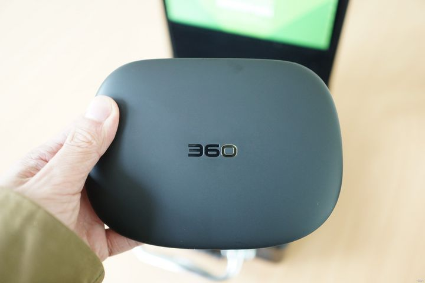

众筹网
个人中心
我的众筹
消息中心
269
关注
401
萌友
50
帖子
最近访客
查看更多
海纳知己
活着就为了改变世界
异性恋
单身
双子座
湖南湘潭
就读于湖南科技大学

在“被停产”后，360安全路由器最近怎么样了？
前不久周鸿祎曾在其新书发布会上表示：“路由器产品不做了，项目打算停掉”。这一席话引发了不少媒体的误读和友商的不解。。。
评论
点赞
发表于9月9日
在“被停产”后，360安全路由器最近怎么样了？
前不久周鸿祎曾在其新书发布会上表示：“路由器产品不做了，项目打算停掉”。这一席话引发了不少媒体的误读和友商的不解。。。
评论
点赞
发表于9月9日
在“被停产”后，360安全路由器最近怎么样了？
前不久周鸿祎曾在其新书发布会上表示：“路由器产品不做了，项目打算停掉”。这一席话引发了不少媒体的误读和友商的不解。。。
评论
点赞
发表于9月9日
关于我们
加入呆萌
媒体报道
帮助中心
内容专区
免责声明
联系我们
移动版
©2014呆萌网 湘ICP备09043258号-2 湘公网安备1101052730